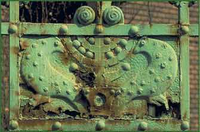

|  | |||
| Béla Lajta (Leitesdorfer) (1873–1920) designed some of the significant buildings of the Jewish community. One of them was the Institute for the Blind, close to Városliget. The building blends Transylvanian folk architecture with Jewish elements. The side entrance recalls a chuppah, who’s columns are topped by a menorah. | |||